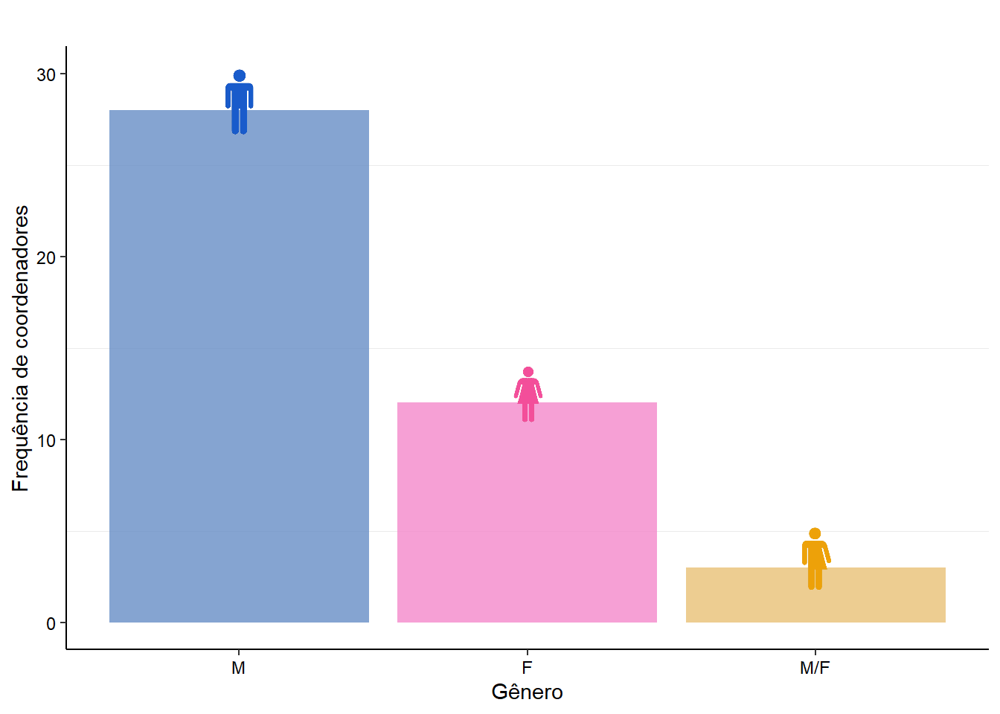
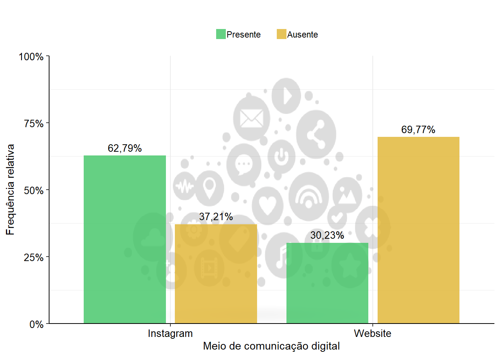
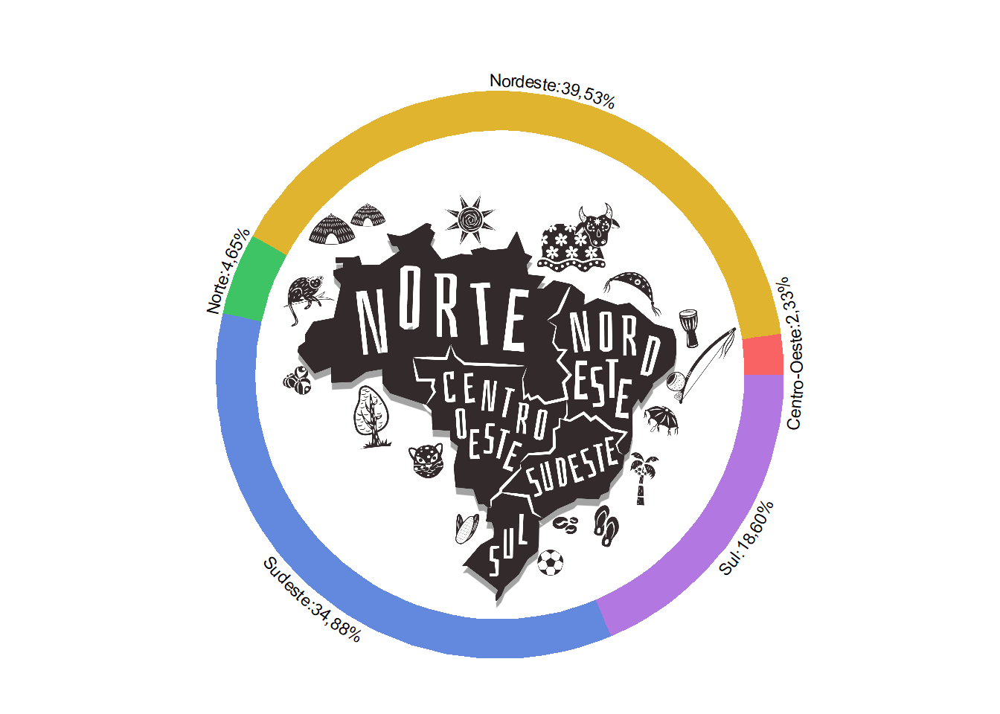

Resumos
Essa seção é dedicada a analisar alguns dos dados obtidos a partir do levantamento efetuado, como a equidade de gêneros nos cargos de coordenação, análise sobre as estratégias de comunicação digital adotadas pelos grupos de carcinologia e a representatividade de polos de carcinologia entre as diferentes regiões brasileiras.
Coordenação por gênero
O gênero masculino é predominante entre os coordenadores de laboratórios e grupos de pesquisa em carcinologia no Brasil. Dos 42 laboratórios e grupos analisados, 28 são coordenados exclusivamente por homens, o que representa mais da metade (65,1%) das lideranças científicas na área. A representação feminina exclusiva está presente em 12 coordenações, correspondendo a 27,9%. Coordenações mistas, nas quais o título de coordenador é compartilhado por duas ou mais pessoas de gêneros diferentes, são minoritárias, ocorrendo em apenas 3 laboratórios (6,9%) (Fig 1).
Comunicação digital
A comunicação digital pode ser definida como a soma de métodos e ferramentas de comunicação que se aplicam à web, redes sociais e dispositivos móveis. Analisar a comunicação digital é importante porque avalia as estratégias e as ações de comunicação entre os laboratórios e a sociedade dentro do ambiente digital. Este aspecto requer uma abordagem cuidadosa, dado seu impacto direto nas propostas de divulgação científica e na interação com o público, assim como a maneira pela qual os estudantes podem conhecer os laboratórios para iniciar ou dar seguimento às suas pesquisas.
Entre as diversas ferramentas de comunicação digital, este estudo focou em duas: website, como uma estratégia fixa de comunicação e Instagram, como uma forma dinâmica, representando as redes sociais. O Instagram foi o único representante de redes sociais porque além de ser mais amplamente utilizada pelos laboratórios (em comparação a outras redes populares como Tiktok, X, Threads, Facebook) , apresenta um formato dinâmico que facilita o engajamento com o público.
Os laboratórios de pesquisa apresentam atualmente grande representatividade no instagram, com 17 laboratórios apresentando perfis ativos nessa plataforma (Fig 2). Em contra-partida, a maioria não aposta em estratégias fixas de comunicação, com mais da metade deles sem um endereço eletrônico (website) disponível para apresentação de suas linhas de pesquisa (Fig 2).
A popularização das redes sociais como meio primário de divulgação científica tem modificado a maneira como os laboratórios compartilham seus resultados e interagem com o público, proporcionando maior acessibilidade ao conhecimento acadêmico. Durante a pandemia de COVID-19 (em 2022), muitos laboratórios adotaram essa rede social como ferramenta principal de divulgação científica, devido à sua capacidade de alcançar uma audiência ampla e diversificada. Essa mudança foi impulsionada pela necessidade de manter a conexão com os estudantes e a sociedade, em um momento em que as atividades presenciais estavam restritas, o financiamento acadêmico enfrentava desafios e a pesquisa científica passou a ser questionada. No entanto, apesar da popularidade das redes sociais, a criação de websites, que oferecem uma apresentação mais estruturada das linhas de pesquisa, ainda é limitada (Fig 2), possivelmente devido aos custos e à complexidade técnica envolvida na manutenção dessas páginas. Adicionalemnte, a aderência a outras plataformas populares, como o Tiktok, ainda é baixa porque demandam maior tempo e/ou técnica para geração de conteúdo de qualidade.

Representação regional
A maioria dos polos de pesquisa sobre crustáceos está, atualmente, localizada na região Nordeste do Brasil, contando com 17 laboratórios/grupos, seguido pela região Sudeste com 15. As regiões Sul, Norte e Centro-Oeste foram as que apresentaram a menor representatividade, com 8, 2 e 1 laboratórios dedicados a carcinologia, respectivamente (Fig 2).
